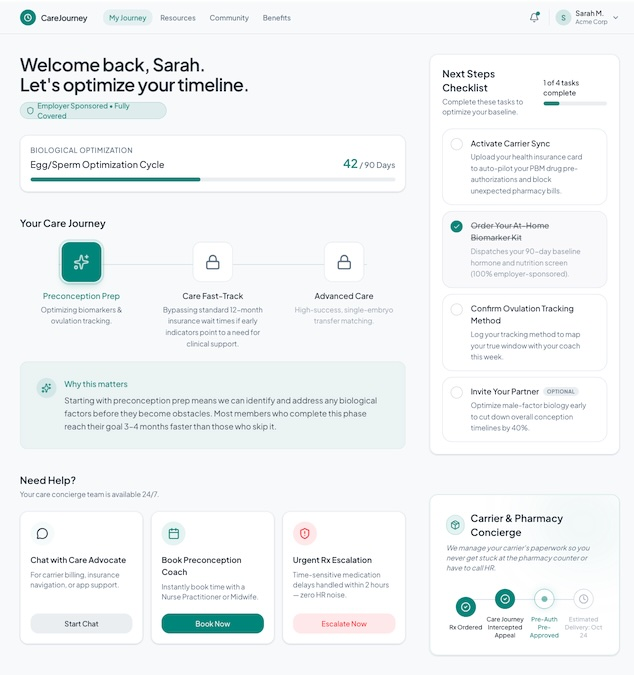

A concept exploration to rethink fertility benefits access
Fertility benefits sit at the intersection of clinical urgency and insurance complexity. Employees face time-sensitive treatment windows but rarely know what's covered or when, and employers absorb the cost of confused escalations and unpredictable renewal spend. The wireframe below explores a navigation model that automates the carrier and pharmacy mechanics behind the scenes so the patient experience stays simple even when the insurance logic isn't.

The problem
Fertility benefits are hard to use precisely because they sit at the intersection of clinical urgency and administrative complexity. Employees face time-sensitive treatment windows but often can't see what's covered, when, or under what conditions until they hit a wall: a denied prior auth, a pharmacy delay, a carrier rule nobody explained up front. Employers, meanwhile, absorb the cost of that confusion. Care Advocates spend hours manually interpreting plan details and carrier coverage guidelines instead of automating that lookup, and HR teams end up fielding escalations and pharmacy phone-tag that have nothing to do with actual clinical care. I wanted to explore what it looks like to move that complexity out of the patient's (and HR's) hands entirely to make the insurance mechanics an automated layer the product manages, rather than a maze the user has to navigate alone.
Why this design
Most fertility navigation tools lead with content: articles, treatment education, a chatbot. I wanted to try leading with status; the first thing a user sees is where they are in their journey and what's covered. That's the question driving the most anxiety, not "what is IVF."
The Care Journey timeline uses locked and unlocked stages on purpose. Insurance waiting periods and step-therapy rules are usually invisible to the patient until they hit a wall such as a denied claim or a surprise bill. Here, that logic is made visible as a simple progression instead of a legal document buried in a benefits PDF. If a stage is locked, the user can see why and what unlocks it, instead of finding out from a rejected prior auth.
The Next Steps Checklist and Carrier & Pharmacy Concierge panels exist because the real friction in fertility benefits isn't usually clinical, but rather administrative. Prior auths, pharmacy coordination, and figuring out what a specific carrier plan actually covers eat up more time and stress than the treatment itself. I wanted the product to absorb that work rather than hand it to the patient or to an overloaded HR team.
Value breakdown
Overview
My Care Journey is a patient navigation portal that makes fertility benefits easier to use and more cost-effective for fully insured employers, with better navigation and care coordination. By guiding users through proactive health tracking and managing complex carrier rules behind the scenes, the platform keeps renewal rates predictable for businesses while offering employees a seamless, stress-free path to parenthood.
Welcome & Plan Status Header
- Patient Value: Instantly confirms that their fertility benefits are 100% covered by their company, removing immediate financial anxiety.
- Employer Value: Visibly highlights a premium employer-sponsored benefit to boost employee appreciation and retention, while establishing a structured timeline that sets clear expectations.
Your Care Journey (Interactive Timeline)
- Patient Value: This is an elite concierge track that uncovers health barriers early through targeted testing. It gathers clinical evidence your doctor can immediately submit to your carrier, allowing you to bypass strict 12-month insurance waiting periods and unnecessary treatments if a real medical issue is found.
- Employer Value: Protects long-term employee health by minimizing high-risk pregnancies, while drastically boosting workforce retention and talent attraction by offering a deeply supported, low-stress family-building experience.
Next Steps Checklist
- Patient Value: Removes the heavy cognitive burden of managing family building by laying out a clear, step-by-step roadmap. It provides the structured organization needed to accurately track and plan a highly time-sensitive clinical process without the constant guesswork.
- Employer Value: Replaces slow, manual human work with an automated insurance engine. Instead of a Care Advocate spending hours hunting down employer-sponsored plan details, interpreting complex carrier coverage guidelines, and manually mapping out the path, the platform automates this data gathering. This clears up insurance friction before treatment begins, preventing the sudden coverage rejections and pharmacy phone-tag emergencies that cause heavy workplace distraction and lost productivity.
Carrier & Pharmacy Concierge
- Patient Value: Provides a real-time tracking tracker for time-sensitive prior authorizations, ensuring expensive specialty medications arrive exactly when needed.
- Employer Value: Intercepts insurance friction and manages carrier rules directly with the pharmacy, keeping the stressful paperwork completely off the internal HR team’s plate.
Need Help? Concierge Support
- Patient Value: Offers 24/7 direct access to Care Advocates and virtual Nurse Practitioners to resolve clinical and billing emergencies instantly.
- Employer Value: Outsources high-stress fertility navigation to third-party medical experts, eliminating the administrative overhead and emotional escalations handled by corporate benefits managers.